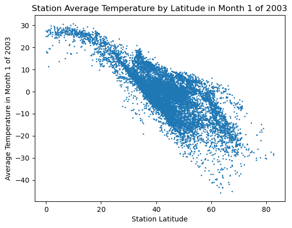

This blog will outline my completion of PIC 16B Homework 1. I use 3 different datasets to create a SQL database, which is then used to query the data and create 3 interesting visualizations. The data that is used is from stations in countries throughout the world that monitor temperature.
Before beginning the coding for the assignment, I loaded in all the necessary packages. The packages are loaded in below, and have a short description of what they were used for in the assignment.
# used to read in data as dataframes and in each functionimport pandas as pd# used in part 1 to create the database and in the query functionsimport sqlite3# used in the temperature_coefficient_plot functionimport numpy as np# used for visualizationsfrom plotly import express as px# used to obtain coefficients in the temperature_coefficient_plot functionfrom sklearn.linear_model import LinearRegression# used to properly show figures in the quarto blogimport plotly.io as piopio.renderers.default="iframe"
1. Create a Database
Before we create the database, we load in the three different datasets into Pandas dataframes.
Stations Dataset:
This is a dataset that contains the ID, latitude, longitude, elevation, and name of each station that we will be looking at.
We are particularly interested in the longitude and latitude columns of this datast, which can be used to create visualizations where the locations of the stations are accurately represented on a world map.
The data is read in below along with a preview of what it looks like.
This is a dataset containing the ID, year, and temperature at the 12 months during the year for each station.
We are especially interested in looking at the temperature fluctuations at each station, so this dataset will be very useful for that.
The dataset is read in below along with a preview of what it looks like.
temps = pd.read_csv("temps.csv")temps.head()
ID
Year
VALUE1
VALUE2
VALUE3
VALUE4
VALUE5
VALUE6
VALUE7
VALUE8
VALUE9
VALUE10
VALUE11
VALUE12
0
ACW00011604
1961
-89.0
236.0
472.0
773.0
1128.0
1599.0
1570.0
1481.0
1413.0
1174.0
510.0
-39.0
1
ACW00011604
1962
113.0
85.0
-154.0
635.0
908.0
1381.0
1510.0
1393.0
1163.0
994.0
323.0
-126.0
2
ACW00011604
1963
-713.0
-553.0
-99.0
541.0
1224.0
1627.0
1620.0
1596.0
1332.0
940.0
566.0
-108.0
3
ACW00011604
1964
62.0
-85.0
55.0
738.0
1219.0
1442.0
1506.0
1557.0
1221.0
788.0
546.0
112.0
4
ACW00011604
1965
44.0
-105.0
38.0
590.0
987.0
1500.0
1487.0
1477.0
1377.0
974.0
31.0
-178.0
Looking at the temperatures dataset above, it is clear that it will not be very easy to work with if we want to look at temperatures by month and year because years and months are all in different columns.
We will solve this issue by creating function to prepare the temps dataset into a more suitable form for our database.
This function, created in lecture, is defined below and is called on the temps dataset. A preview of the new dataset that we will use for database creation is also shown.
This is a dataset containing the names of every country along with their 2-letter abbreviations.
This will be used to determine which stations are in which country using the ID columns in the stations and temperatures datasets.
The data is read in below along with a preview of what the data looks like.
countries = pd.read_csv("https://raw.githubusercontent.com/mysociety/gaze/master/data/fips-10-4-to-iso-country-codes.csv")countries.head()
FIPS 10-4
ISO 3166
Name
0
AF
AF
Afghanistan
1
AX
-
Akrotiri
2
AL
AL
Albania
3
AG
DZ
Algeria
4
AQ
AS
American Samoa
We now create the database with one table for each of the three datasets that we have.
We start by establishing a connection to a file “hw1.db” which is the main file for the database.
We then add each dataset that we read in above into the database using the to_sql method.
The connection to the database is then closed.
conn = sqlite3.connect("hw1.db")countries.to_sql("countries", conn, if_exists ="replace", index =False)stations.to_sql("stations", conn, if_exists ="replace", index =False)temps.to_sql("temperatures", conn, if_exists ="replace", index =False)#for i, df in enumerate(temps_iter):#df = prepare_df(df)#df.to_sql("temperatures", conn, if_exists = "replace" if i == 0 else "append", index = False)conn.close()
2. Query Function
The code below is also contained in a separate file called “climate_database.py”.
from climate_database import query_climate_databaseimport inspectprint(inspect.getsource(query_climate_database))
def query_climate_database(db_file, country, year_begin, year_end, month):
with sqlite3.connect(db_file) as conn:
cmd = \
f"""
SELECT
stations.NAME, stations.LATITUDE, stations.LONGITUDE, countries.Name "Country", temperatures.Year, temperatures.Month, temperatures.Temp
FROM
stations
INNER JOIN
countries ON SUBSTRING(stations.ID, 1, 2) = countries.[FIPS 10-4]
JOIN
temperatures ON stations.ID = temperatures.ID
WHERE
countries.Name = "{country}"
AND
temperatures.Year BETWEEN {year_begin} AND {year_end}
AND
temperatures.Month = {month}
"""
df = pd.read_sql_query(cmd, conn)
return(df)
query_climate_database(db_file ="hw1.db", country ="India", year_begin =1980, year_end =2020, month =1)
NAME
LATITUDE
LONGITUDE
Country
Year
Month
Temp
0
PBO_ANANTAPUR
14.583
77.633
India
1980
1
23.48
1
PBO_ANANTAPUR
14.583
77.633
India
1981
1
24.57
2
PBO_ANANTAPUR
14.583
77.633
India
1982
1
24.19
3
PBO_ANANTAPUR
14.583
77.633
India
1983
1
23.51
4
PBO_ANANTAPUR
14.583
77.633
India
1984
1
24.81
...
...
...
...
...
...
...
...
3147
DARJEELING
27.050
88.270
India
1983
1
5.10
3148
DARJEELING
27.050
88.270
India
1986
1
6.90
3149
DARJEELING
27.050
88.270
India
1994
1
8.10
3150
DARJEELING
27.050
88.270
India
1995
1
5.60
3151
DARJEELING
27.050
88.270
India
1997
1
5.70
3152 rows × 7 columns
3. Geographic Scatter Function
from climate_database import temperature_coefficient_plotprint(inspect.getsource(temperature_coefficient_plot))
def temperature_coefficient_plot(db_file, country, year_begin, year_end, month, min_obs, **kwargs):
df = query_climate_database(db_file, country, year_begin, year_end, month)
df = df[df.groupby("NAME")["Year"].transform('nunique') >= min_obs]
# get the latitude and longitude of each station
df2 = df.groupby("NAME")[["LATITUDE", "LONGITUDE"]].median()
# lambda function to get the first coefficient of a linear model
linreg = lambda x: LinearRegression().fit(np.array(x["Year"]).reshape(x["Year"].size, 1), x["Temp"]).coef_[0]
df2["change_temp"] = df.groupby("NAME").apply(linreg)
plot_title = f"Estimates of Yearly Increase in Temperature in Month {month} for Stations in {country}, Years {year_begin}-{year_end}"
return(px.scatter_mapbox(lat = df2["LATITUDE"],
lon = df2["LONGITUDE"],
color = round(df2["change_temp"], 4), # make the color the average temperature
color_continuous_midpoint = 0, # center the color scale at 0
hover_name = df2.index, # make the hover name the stations name
labels = {"color":"Estimated Yearly Increase (Celcius)"}, # change the color label
title = plot_title,
**kwargs))
Question 1: How does a country’s latitude affect its average monthly temperature in a specific month and year?
def query_climate_database2(db_file, year, month, min_latitude, max_latitude):with sqlite3.connect(db_file) as conn: cmd =\f""" SELECT stations.NAME, stations.LATITUDE, countries.Name "Country", temperatures.Year, temperatures.Month, temperatures.Temp FROM stations INNER JOIN countries ON SUBSTRING(stations.ID, 1, 2) = countries.[FIPS 10-4] JOIN temperatures ON stations.ID = temperatures.ID WHERE temperatures.Year = {year} AND temperatures.Month = {month} AND stations.LATITUDE BETWEEN {min_latitude} AND {max_latitude} """ df = pd.read_sql_query(cmd, conn)return(df)query_climate_database2(db_file ="hw1.db", year =2003, month =1, min_latitude =0, max_latitude =150)
NAME
LATITUDE
Country
Year
Month
Temp
0
SAVE
57.7667
Antigua and Barbuda
2003
1
-1.19
1
DUBAI_INTL
25.2550
United Arab Emirates
2003
1
19.39
2
ABU_DHABI_INTL
24.4330
United Arab Emirates
2003
1
19.64
3
AL_AIN_INTL
24.2620
United Arab Emirates
2003
1
18.45
4
KABUL_INTL
34.5660
Afghanistan
2003
1
3.62
...
...
...
...
...
...
...
12953
CHRISTIANSTED_AP
17.7028
Virgin Islands, U.S.
2003
1
26.28
12954
CHARLOTTE_AMALIE_AP
18.3331
Virgin Islands, U.S.
2003
1
26.36
12955
VILLA_CISNEROSMIL
23.7000
Western Sahara
2003
1
18.35
12956
DAKHLA
23.7110
Western Sahara
2003
1
17.53
12957
WAKE_ISLAND
19.2833
Wake Island
2003
1
26.16
12958 rows × 6 columns
import matplotlib.pyplot as pltdef temperature_latitude_plot(db_file, year, month, min_latitude, max_latitude, **kwargs): df = query_climate_database2(db_file, year, month, min_latitude, max_latitude) fig, ax = plt.subplots() ax.plot(df["LATITUDE"], df["Temp"], **kwargs) ax.set_xlabel("Station Latitude") ax.set_ylabel(f"Average Temperature in Month {month} of {year}") ax.set_title(f"Station Average Temperature by Latitude in Month {month} of {year}") plt.show()temperature_latitude_plot(db_file ="hw1.db", year =2003, month =1, min_latitude =0, max_latitude =200, marker =".", linestyle ="", ms =2)

conn = sqlite3.connect('hw1.db')cursor = conn.cursor()cursor.execute("SELECT sql FROM sqlite_master WHERE type='table';")for result in cursor.fetchall():print(result[0])conn.close()
## Does station elevation have an affect on the temperature readings for stations that are close together?
def query_climate_database3(db_file, year, month, middle_latitude, middle_longitude, radius):with sqlite3.connect(db_file) as conn: cmd =\f""" SELECT stations.NAME, stations.STNELEV, stations.LONGITUDE, stations.LATITUDE, countries.Name "Country", temperatures.Year, temperatures.Month, temperatures.Temp FROM stations INNER JOIN countries ON SUBSTRING(stations.ID, 1, 2) = countries.[FIPS 10-4] JOIN temperatures ON stations.ID = temperatures.ID WHERE temperatures.Year = {year} AND temperatures.Month = {month} AND stations.LATITUDE BETWEEN {middle_latitude} - {radius} AND {middle_latitude} + {radius} AND stations.LONGITUDE BETWEEN {middle_longitude} - {radius} AND {middle_longitude} + {radius} """ df = pd.read_sql_query(cmd, conn)return(df)query_climate_database3(db_file ="hw1.db", year =2003, month =1, middle_latitude =25, middle_longitude =25, radius =5)
NAME
STNELEV
LONGITUDE
LATITUDE
Country
Year
Month
Temp
0
SIWA
-15.0
25.3167
29.2000
Egypt
2003
1
13.67
1
DAKHLA
107.0
29.0000
25.4831
Egypt
2003
1
15.12
2
BAHARIA
127.0
28.9000
28.3331
Egypt
2003
1
15.36
3
KUFRA
436.0
23.3000
24.2200
Libya
2003
1
15.12
import matplotlib.pyplot as pltdef temperature_elevation_plot(db_file, year, month, middle_latitude, middle_longitude, radius, **kwargs): df = query_climate_database3(db_file, year, month, middle_latitude, middle_longitude, radius) fig, ax = plt.subplots() ax.plot(df["STNELEV"], df["Temp"], **kwargs) ax.set_xlabel("Station Elevation") ax.set_ylabel(f"Average Temperature in Month {month} of {year}") ax.set_title(f"Station Average Temperature by Elevation in Month {month} of {year} by Longitude {middle_longitude} and Latitude {middle_latitude}") plt.show()temperature_elevation_plot(db_file ="hw1.db", year =2003, month =1, middle_latitude =25, middle_longitude =25, radius =10, linewidth =2)